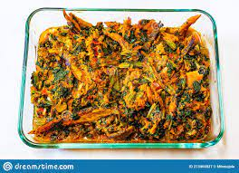

Yoruba Eforiro

Eforiro Cuisine
The steps to take to prepare sumptuous eforiro
Ingredients
- Melon Seeds
- Ginger
- Onions
- Garlic
- Locust bean
- chilli and pepper
- salt
- water
- Palm oil
- stock fish, meat and fish
Steps
- Get clean water
- chaff the melon and grind with a blender (Do not add water)
- put pot afire and pour water
- Allow to boil for 5 minutes then add oil
- blend your ginger, locust bean, garlic, chilli pepper and onions together
- Pour No 5 above into the pot and also add No. 2
- Allow to steam togehter for 10 minutes then add your meat/stockfish and then salt
- cover and allow to heat up for a further 10/15 minutes. Meanwhile taste for salt.
- Remove from the gas and serve with better swallow say semo, eba, fufu, amala etc.